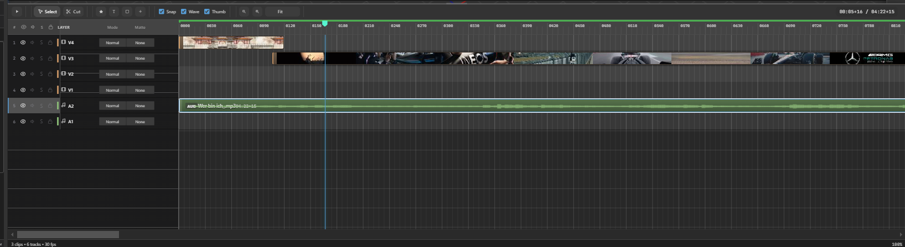
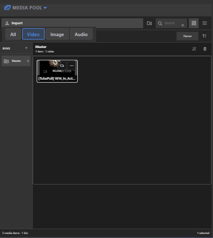
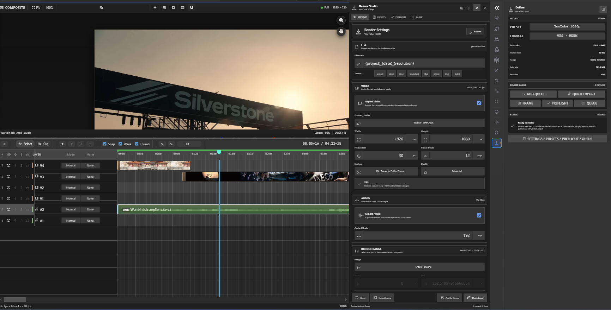

Video Sequencer
The Video Sequencer is SM Engine's track-based editing suite: a multi-lane timeline
for
assembling video, images, audio and text into a finished 1280×720 / 30 FPS movie that can be
exported
to .webm / .mp4 right from the viewport.
#toggle-video-editor-btn). The viewport switches to
.video-editing-mode,
the live preview canvas and the sequencer appear at the bottom of the editor, and the engine
enters
playback-render mode (a sm:video-mode event is dispatched).
Preview & Project

- Live preview — a 2D canvas (
#video-editing-canvas) at project resolution (default 1280×720) renders the composited sequence in real time. - Project settings — resolution (e.g. 1920×1080 / 1280×720 / 720×405) and timeline FPS (default 30) are configurable from the project settings popup.
- Transport — the sequencer toolbar shows a playhead timecode
(
hh:mm:ss:ff), play/pause and looping controls.
Media Pool

The media pool (#media-pool-header / #media-pool-grid) holds imported
assets for
the sequence:
- Import Media —
#import-media-btnopens a file picker acceptingvideo/*,image/*andaudio/*. - Filters — All / Video / Image quick-filter buttons.
- Drag an asset from the pool onto the timeline to create a Media clip.
Timeline & Clips
The sequencer (#sequencer-root) contains the toolbar, a time ruler and a stack of lanes
(draggable with the .sequencer-splitter, default live height 260 px):
- View controls — Fit / 25% / 50% / 100% / 200% zoom, plus frame-step navigation.
- Tools — Select and Cut (razor) tools for editing clips on lanes.
- Add clip — Marker, Text, Solid (color background) or Media buttons drop new clips at the playhead.
- Snap / Waveforms / Thumbnails — toggles for magnetic snapping, audio waveform overlays and video thumbnail previews on clips.
- Clips — drag to move, trim edges, ripple with timecode precision; each clip
stores
in/out,duration,sourceIn/sourceOutand a canvas-space transform (position + size in project pixels).
Clip Inspector
Selecting a clip opens the Clip Inspector (hosted in the main inspector panel via
VideoClipInspector.host()) with card sections:
- CLIP — in/out, duration, source in/out (with timecode fields at project FPS).
- TRANSFORM — position and size within the project resolution.
- Media clips also expose source trimming, loop and volume/audio controls.
Export & Recording

Export streams the live preview through captureStream() into a
MediaRecorder
(webm, then transcodeable to mp4). During export the engine enters
SMEngineRenderer._isRenderingVideo mode and the viewport renders frame-accurately while
the
sequencer plays through the composition. The finished file downloads when recording stops.
Scripting Reference
window.SMVideoEditingManager.toggle(); // enter/exit sequencer mode
window.SMVideoEditingManager.enter();
window.SMVideoEditingManager.exit();
// Timeline data: SequencerState (fps, playhead, clips) drives the renderer
// Clips: { type: 'media'|'text'|'solid'|'marker', in, out, sourceIn, sourceOut,
// x, y, w, h (project pixels) }